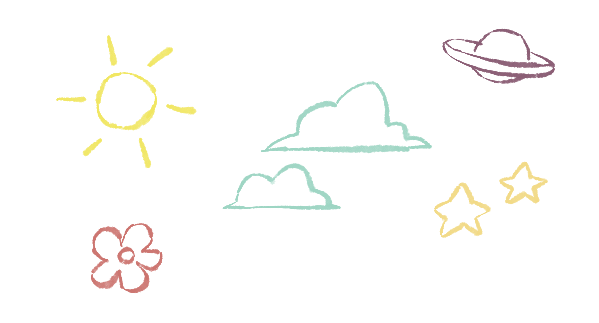
Des histoires illustrées
Suis Zozzo dans ses aventures à la maison, à l’école ou au zoo. Chaque histoire est une nouvelle occasion de découvrir la LSF.
Entre dans l’univers de Zozzo et découvre comment les personnages communiquent grâce aux signes, aux expressions et aux émotions.
Un dictionnaire visuel
LES FONCTIONNALITÉS
Bien plus qu’une application : un monde à explorer !

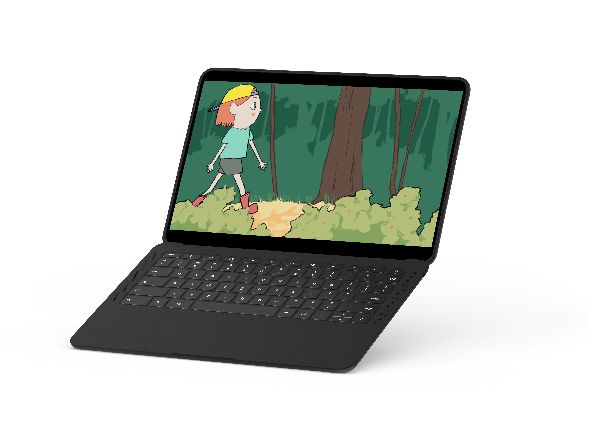
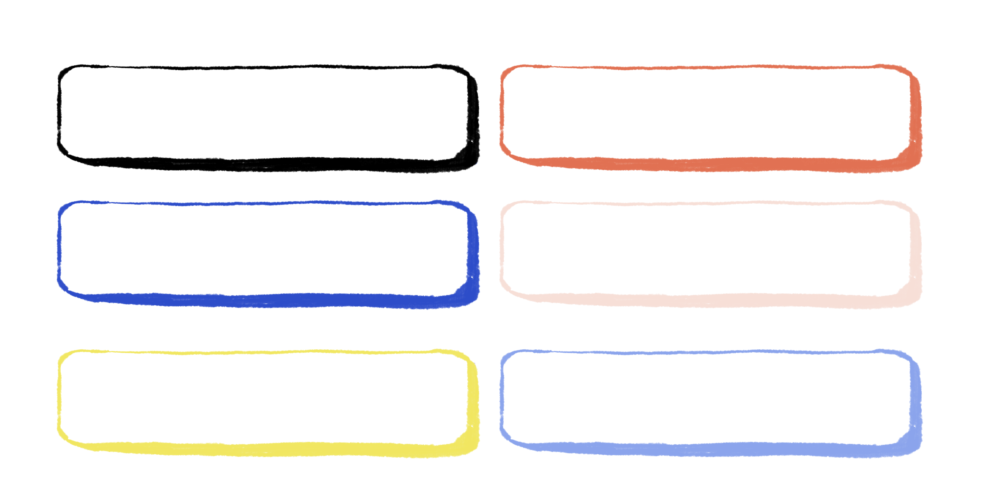
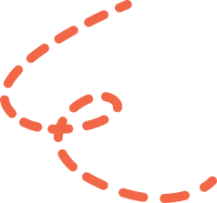
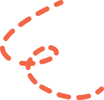
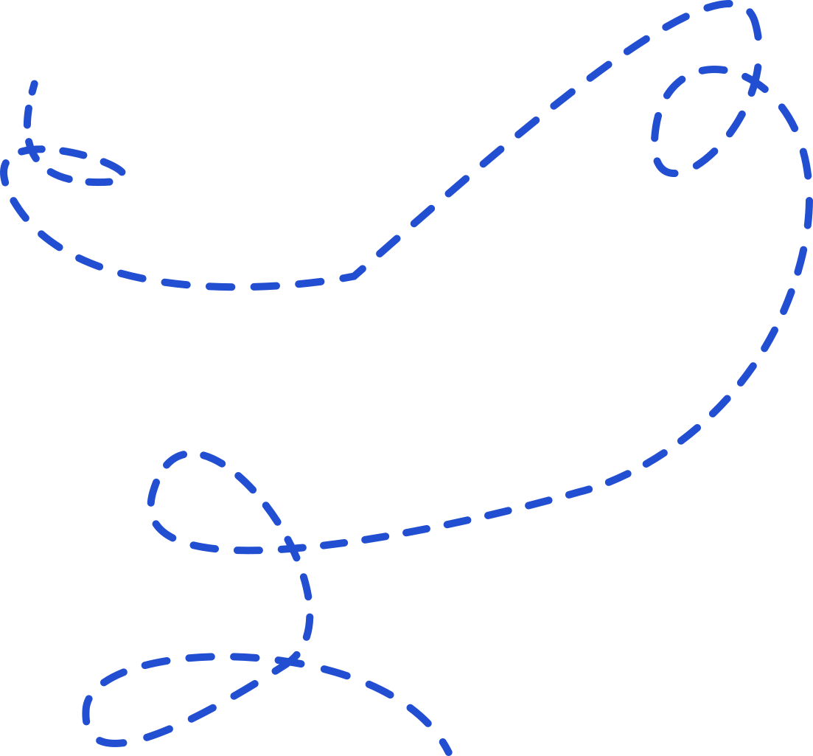
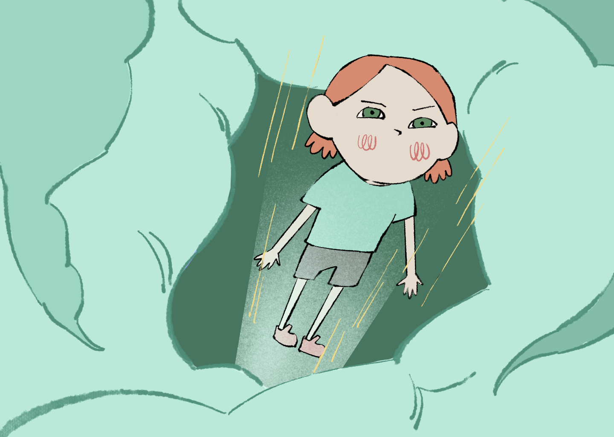
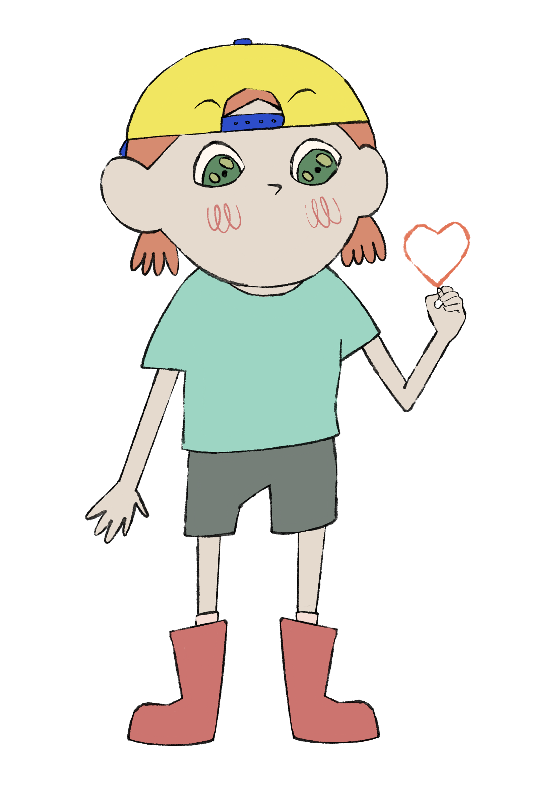
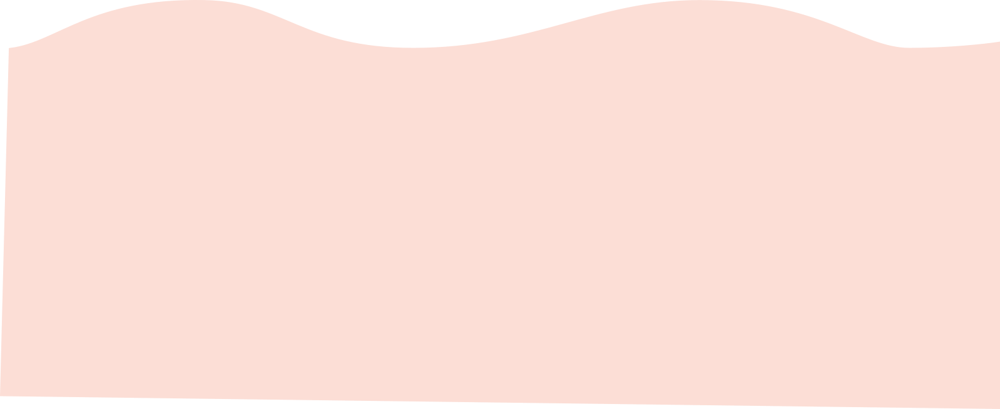
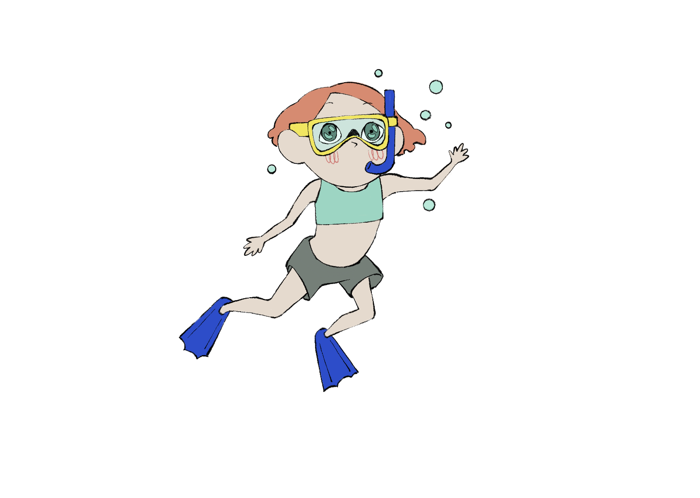

Comment ça marche ?
Une langue à découvrir, une aventure à vivre.
Avec ZOZZO, apprendre la langue des signes française devient une expérience ludique et immersive. L’enfant découvre de nouveaux signes au fil des histoires et les met en pratique grâce à des activités interactives.
Je suis Zozzo dans son quotidien.
Je découvre de nouveaux signes à travers des histoires illustrées.
Je relève des petits défis, je réponds à des quiz.
Je mets mes connaissances en pratique.
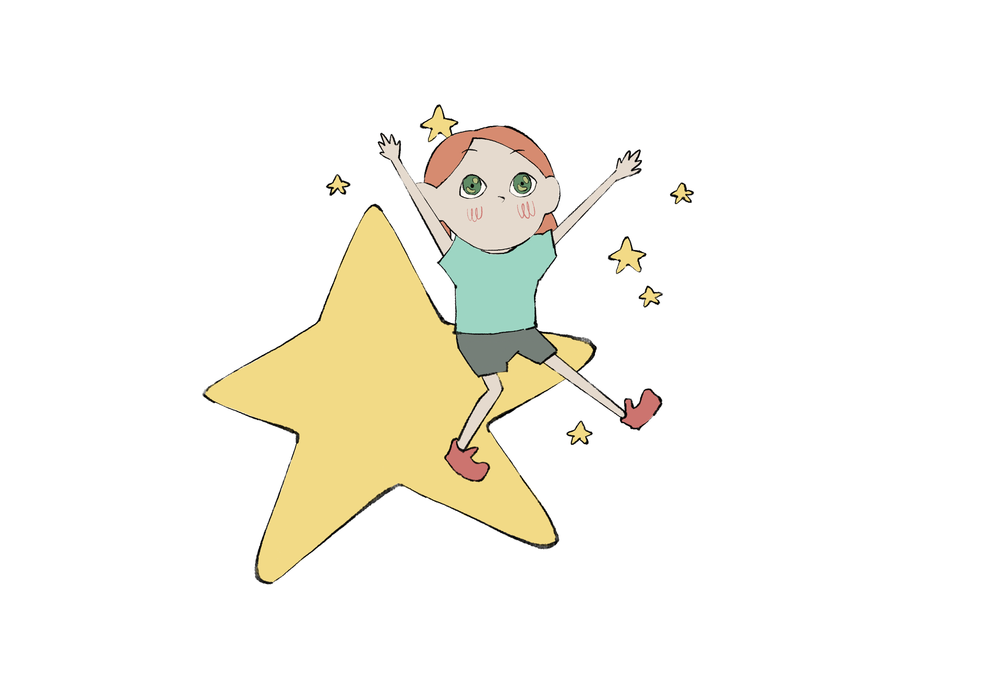
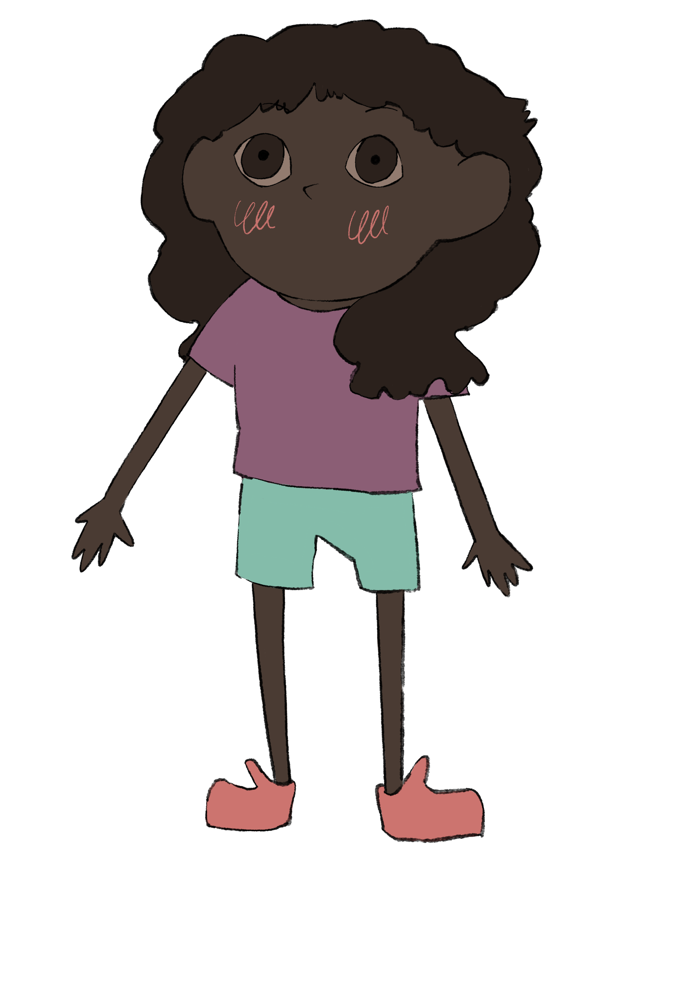
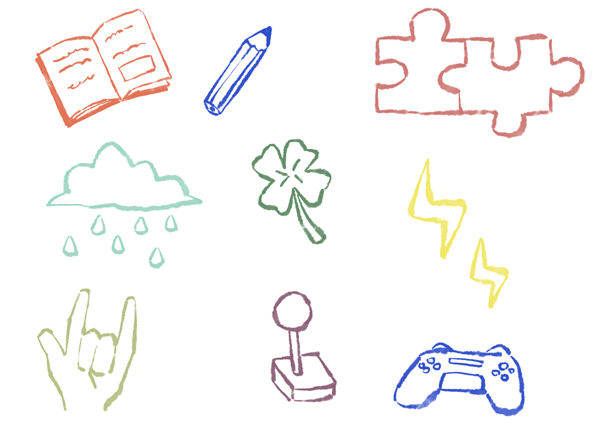
POURQUOI LA LSF ?
Et si on apprenait à communiquer autrement ?
La langue des signes française est une langue à part entière. La découvrir dès l’enfance, c’est ouvrir la porte à de nouvelles rencontres et à d’autres façons de s’exprimer.
Avec ZOZZO, les enfants peuvent :
Parce que communiquer, ce n’est pas seulement parler. C’est aussi regarder, observer, comprendre et partager.
Des mains qui racontent, des histoires qui rassemblent.
NOS PARTENAIRES
Ensemble, faisons grandir l’inclusion.
ZOZZO est un projet imaginé pour sensibiliser les enfants à la langue des signes française et encourager une communication plus inclusive dès le plus jeune âge.
Associations, professionnels de la surdité, établissements scolaires et partenaires engagés : chaque collaboration nous aide à faire évoluer le projet et à construire une expérience plus adaptée aux enfants.
Merci à celles et ceux qui nous accompagnent dans cette aventure !
Vous souhaitez devenir partenaire ?
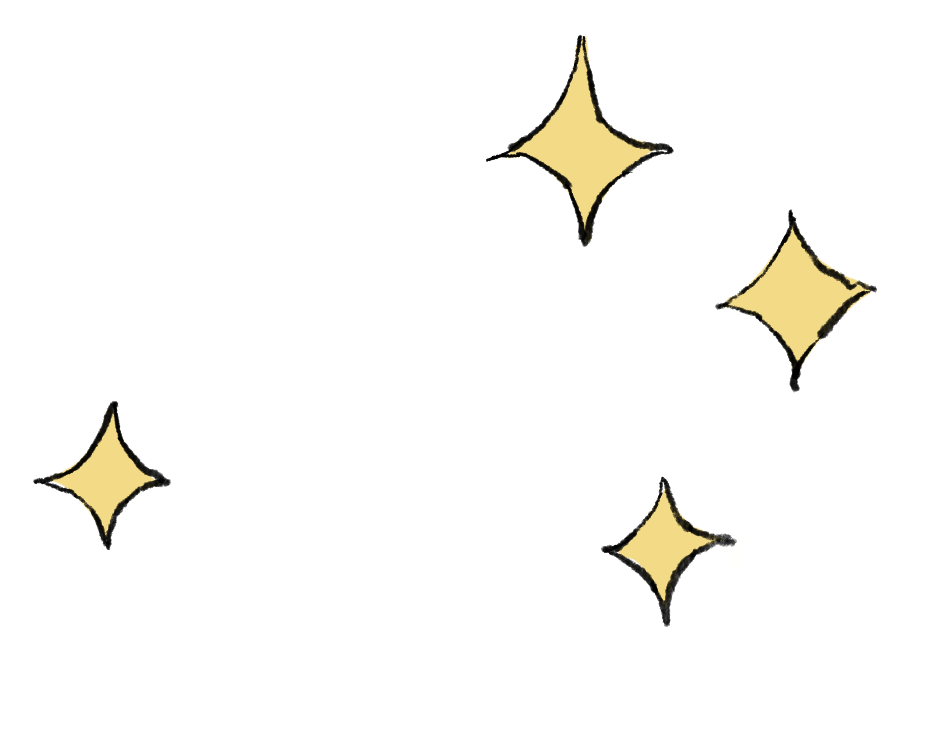
NEWSLETTER
Une petite dose de ZOZZO dans votre boîte mail !
Nouvelles histoires, fonctionnalités inédites, actualités du projet et ressources autour de la LSF : ne manquez rien de nos prochaines aventures.
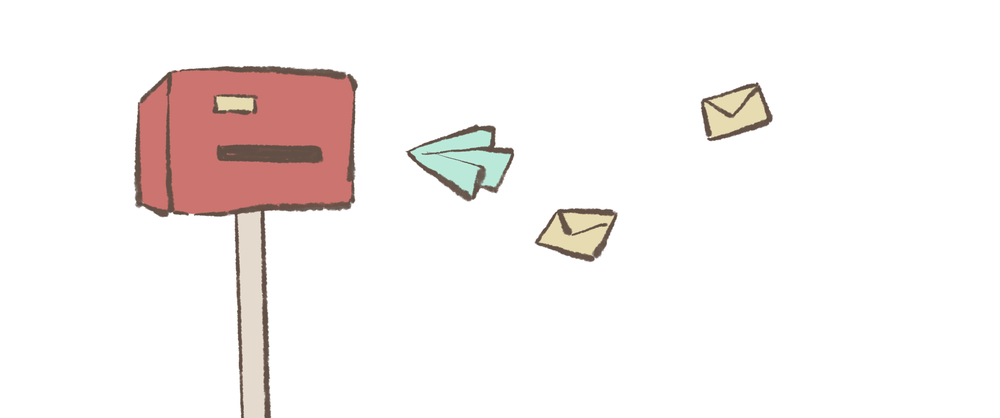


Votre enfant passe du temps sur les écrans.
Et si ce temps devenait utile ?
Avec Zozzo, il apprend la langue des signes facilement, développe son empathie et découvre une nouvelle façon de communiquer.
Elle a plein de choses à raconter. Mais pas avec des mots !
Dans un monde où les enfants parlent, chuchotent, rigolent et discutent, il y a Zozzo.
Zozzo est une petite fille pleine de vie. Elle ne parle pas, mais elle a mille choses à raconter ! Pour s’exprimer, elle utilise ses mains, son visage et ses émotions.
Avec ses amis, à la maison, à l’école ou au zoo, elle vit de grandes aventures et fait découvrir à ton enfant une autre manière de communiquer.
Mais attention : pour comprendre Zozzo, il faut apprendre à signer avec elle !
Prêt à partir à l’aventure ?